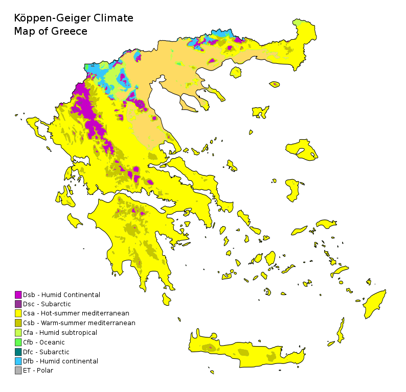

Clima
Clima Greciei este în principal mediteraneană cu ierni blânde și umede
și cu veri uscate și călduroase. Acest tip de climă este prezent în toate
zonele de coastă, inclusiv în Atena, în Ciclade, Dodocaneze, Creta și
Pelopones, în Insulele Ionice și în unele părți din Grecia continentală
centrală. Munții Pindului afectează puternic clima din țară, zonele de la vest
de munți fiind considerabil mai umede în medie (din cauza expunerii mai mari
la vânturile de vest care aduc umezeală) decât cele aflate la est de munți (din
cauza unui efect de umbră pluviometrică).
Zonele montane din Grecia de nord-vest (părți din Epir, Grecia Centrală, Tesalia, Macedonia de Vest) ca și în zonele centrale muntoase ale Peloponesului - inclusiv părți din regiunile Aheea, Arcadia și Laconia - prezintă o climă alpină cu zăpezi abundente. Zonele interioare ale Greciei nordice, din Macedonia centrală și din Macedonia de Est și Tracia prezintă o temperate climate, cu ierni reci și umede și cu veri calde și uscate marcate de furtuni frecvente. Zăpada cade anual în munți și în nordul țării, apărând însă uneori și în zonele mai joase, cum ar fi Atena.
Din punct de vedere al florei și al fauneil, teritoriul Greciei se împarte în două regiuni:
- Regiunea pădurilor de lemn de esență tare
- Regiunea pădurilor mediteraneene
Regiunea pădurlor de lemn de esență tare
 La rândul său, este împărțită în nordul pădurii mixte balcanice de câmpie și în pădurea mixtă
a munților Rodopi. Clima din aceste locuri este temperată, ceea ce înseamnă că temperaturile
rămân blânde pe tot parcursul anului, iar unele înghețuri apar iarna.
La rândul său, este împărțită în nordul pădurii mixte balcanice de câmpie și în pădurea mixtă
a munților Rodopi. Clima din aceste locuri este temperată, ceea ce înseamnă că temperaturile
rămân blânde pe tot parcursul anului, iar unele înghețuri apar iarna.
Flora și fauna grecească din aceste păduri s-au adaptat să trăiască în condiții foarte particulare, în așa fel încât rata de creștere este adesea lentă, în special cea a plantelor. Dar să o privim mai detaliat:
Flora
Printre cele mai caracteristice flore ale acestor păduri temperate grecești evidențiem arborii maiestuoși precum:
- Bradul alb (Abies alba): Este un conifer cu creștere lentă, cu o coroană piramidală care atinge o înălțime de aproximativ 60m.
- Carpa orientală (Carpinus orientalis): Este un copac de foioase care atinge o înălțime de 10 metri. Poate fi găsit alături de fag, deoarece ambele au nevoie de climă ușor rece pentru a crește.
- Carpa albă (Carpinus betulus): este un copac de foioase foarte comun în pădurile degradate, crescând peste 600 de metri deasupra nivelului mării. Acesta atinge o înălțime de 25 de metri, maxim 30 de metri, și uneori poate fi găsit crescând alături de fagi.
- Fagul (Fagus sylvatica): Este un copac de foioase cu creștere lentă, care atinge o înălțime de 40 de metri. În Grecia se găsește formând păduri în Pilio.
- Stejarul troian (Quercus trojana): Este un arbore cu foioase, cu creștere lentă, care atinge o înălțime de aproximativ 20 de metri.
Fauna
În aceste păduri trăiesc ursi bruni, multe reptile precum: șopârle, vipere cu bot; capra albă de munte este foarte rară și o veți găsi numai în Grecia, în special în defileul Samariei.
Regiunea pădurilor mediteraneene
 Acest tip de pădure este împărțit în patru tipuri: pădurea de foioase ilirice,
pădurea mixtă a Munților Pindo, pădurea mediteraneană a Cretei și pădurea sclerofilă
și mixtă din Marea Egee și vestul Turciei.
Acest tip de pădure este împărțit în patru tipuri: pădurea de foioase ilirice,
pădurea mixtă a Munților Pindo, pădurea mediteraneană a Cretei și pădurea sclerofilă
și mixtă din Marea Egee și vestul Turciei.
Flora și fauna pe care le puteți vedea știu să trăiască într-un loc în care ploaia nu cade întotdeauna din abundență și unde temperaturile pot crește mult în timpul verii. Astfel, speciile sale cele mai reprezentative sunt:
Flora
Printre cele mai reprezentative specii ale pădurilor mediteraneene subliniem aceste plante care sunt utile pentru oameni:
- Migdalul (Prunus dulcis): Acesta este un copac de foioase care crește până la o înălțime de 7m și produce nuci delicioase: migdale.
- Curmalul (Phoenix dactylifera): Este un palmier ce crește rapid, care poate atinge o înălțime de 10 metri. Este cultivat în întreaga regiune mediteraneană pentru rezistența sa la secetă și curmale.
- Smochin (Ficus carica): Este un copac de foioase care atinge o înălțime de 6m și are o rată de creștere rapidă și ale cărui fructe, smochine, sunt, de asemenea, comestibile.
- Rodie (Punica granatum): Este un copac foioase ornamental care produce fructe, rodii, care sunt comestibile pentru oameni. Crește foarte repede până la o înălțime de 5-6m.
- Măslinul (Olea europaea): Este un copac veșnic verde care atinge o înălțime de 5-6 metri și produce o cantitate mare de măsline.
Să nu uităm de florile care dau culoare peisajului, cum ar fi anemonele, lalele, violetele sau narcisele.
Fauna
Într-un climat care poate fi dificil pentru viața animalelor, este interesant de evidențiat marea varietate de animale pe care o puteți găsi în aceste păduri, cum ar fi râșii, veverițe brune, vulpii, șacalii, cerbii, lupii.
În ceea ce privește marea, dacă mergeți la scufundări, veți vedea homari, calamari, caracatițe, creveți, crabi, midii și chiar delfini.
Dacă vorbim despre păsări, Grecia se poate lăuda cu faptul că este un punct de întâlnire sau un punct de trecere pentru multe dintre ele, deci dacă doriți să vedeți privighetoari, rațe, fazani, pelicani sau ulii, nu ezitați să călătoriți în această țară atât de bogată în animale și plante.
În peisajele sale există atât de multă bogăție animală și vegetală, încât există 5500 de specii de plante, 116 de mamifere, 422 de pasărări, 126 de pești, 60 de reptile și 20 de amfibieni.